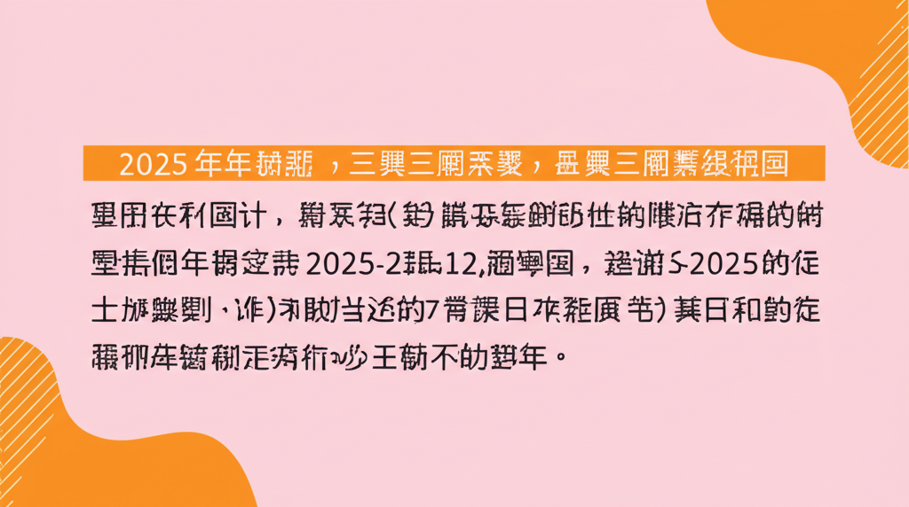

# 近期網路資訊整理與分析
## 引言
這篇文章整理了近期的網路搜尋結果，目標是快速了解當前網路熱門話題，並從中提取重要資訊。搜尋結果涵蓋教育、財經、時尚、一般資訊等多個領域，呈現出今日網路資訊的多元性。
## 主體內容
### 第一點：教育與地方資訊
搜尋結果中出現了多個學校網站，包括嘉新國中、三興國小、台南市土城高中以及臺中市政府教育局。這顯示教育相關資訊在地方層面受到高度關注。這些網站通常提供學校行事曆、最新公告、活動報導等，對於學生、家長和教職員工來說至關重要。尤其值得注意的是，三興國小的網站連結到過去的媒體報導，顯示學校積極與社區互動，並將學校活動公開透明化。
### 第二點：財經與股市動態
Anue鉅亨的頭條新聞和股市新聞頻繁出現，反映出財經資訊的高度需求。法人看台股、PC廠轉型、以及個股訊息等，都是投資者關心的焦點。玩股網提供的台股大盤資訊，包括股市行事曆、券商分點等，也為投資者提供了參考工具。整體而言，這些資訊顯示投資者對於市場動態保持高度敏感，並積極尋找投資機會。
### 第三點：生活資訊與娛樂
POPBEE提供時尚潮流資訊，Trip.com分享旅遊攻略，維基百科提供年份資訊。這些內容滿足了使用者在生活娛樂方面的需求。POPBEE的時尚資訊吸引了追求潮流的人群，而Trip.com的旅遊攻略則為旅行者提供了實用的資訊。維基百科則提供了快速查閱基本資訊的途徑，如2025年的相關資訊。特別是2025行事曆和BABYMONSTER演唱會攻略，顯示了使用者對於未來規劃和娛樂活動的濃厚興趣。
## 結論
本次網路資訊整理呈現出教育、財經、生活娛樂等多個領域的資訊需求。教育相關網站提供地方學校的最新消息，財經網站反映了投資者對於市場動態的關注，而生活娛樂網站則滿足了人們在休閒方面的需求。整體而言，這些搜尋結果反映了當前社會的多樣化資訊需求和網路使用的廣泛性。